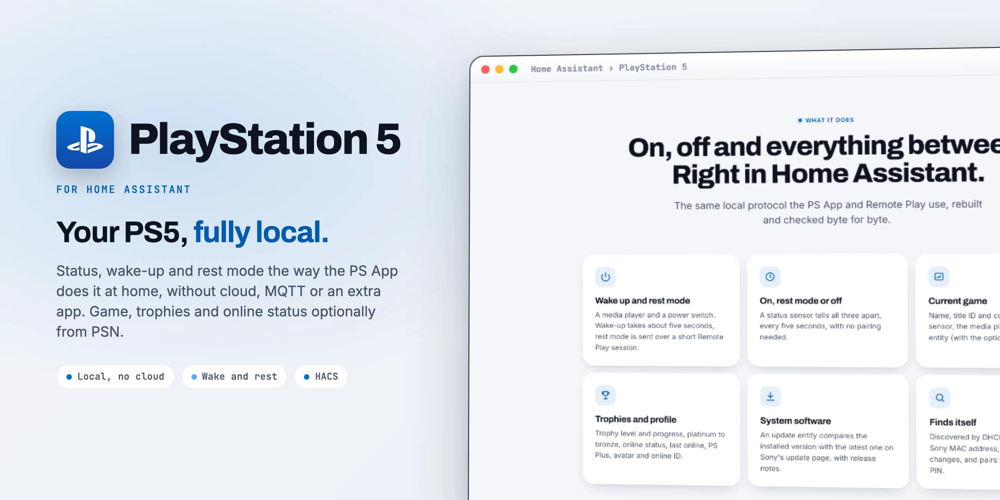

The PS5 in Home AssistantDie PS5 in Home Assistant
PlayStation 5 talks to your console the way the PS App does at home: status, wake-up and rest mode without cloud, MQTT or an extra app. The current game, trophies and online status come optionally from the PSN cloud.PlayStation 5 spricht mit deiner Konsole wie die PS-App im Heimnetz: Status, Aufwecken und Ruhemodus ohne Cloud, MQTT oder Zusatz-App. Laufendes Spiel, Trophäen und Online-Status kommen auf Wunsch aus der PSN-Cloud.

Just arrivedGerade neu
The latest releases make switching off reliable even when the console is still busy, and keep your PSN data out of bug reports.Die letzten Releases machen das Ausschalten zuverlässig, auch wenn die Konsole noch beschäftigt ist, und halten deine PSN-Daten aus Fehlerberichten heraus.
If the PS5 does not accept rest mode right away, Home Assistant retries in the background for up to 210 seconds and keeps showing "off". Pulled the plug meanwhile? It stops at once.Nimmt die PS5 den Ruhemodus nicht sofort an, wiederholt Home Assistant im Hintergrund bis zu 210 Sekunden und zeigt weiter „aus“. Zwischendurch Stecker gezogen? Dann hört es sofort auf.
Pairing keys, PSN account ID, refresh token, IP and MAC address are redacted from the diagnostics download.Kopplungsschlüssel, PSN-Konto-ID, Erneuerungs-Token, IP- und MAC-Adresse werden im Diagnose-Download geschwärzt.
Setup no longer waits for the PSN cloud or the update page; both load in the background.Die Einrichtung wartet nicht mehr auf die PSN-Cloud oder die Update-Seite; beide laden im Hintergrund.
A new PIN no longer drops the PSN cloud settings from the entry.Eine neue PIN wirft die PSN-Cloud-Einstellungen nicht mehr aus dem Eintrag.
Releases count year.month.number: 26.10.2 is the second release of October 2026.Releases zählen Jahr.Monat.Nummer: 26.10.2 ist das zweite Release im Oktober 2026.
Everything that changed, release by release: the changelog.Alles, was sich geändert hat, Release für Release: das Changelog.
What it doesWas sie kann
The same local protocol the PS App and Remote Play use, rebuilt and checked byte for byte.Dasselbe lokale Protokoll, das PS-App und Remote Play nutzen, nachgebaut und Byte für Byte geprüft.
A media player and a power switch. Wake-up takes about five seconds, rest mode is sent over a short Remote Play session.Ein Mediaplayer und ein Ein/Aus-Schalter. Aufwecken dauert etwa fünf Sekunden, der Ruhemodus geht über eine kurze Remote-Play-Sitzung.
A status sensor tells all three apart, every five seconds, with no pairing needed.Ein Status-Sensor unterscheidet alle drei, alle fünf Sekunden, ganz ohne Kopplung.
Name, title ID and cover in the game sensor, the media player and an image entity (with the optional PSN cloud).Name, Titel-ID und Cover im Spiel-Sensor, im Mediaplayer und als Bild-Entität (mit der optionalen PSN-Cloud).
Trophy level and progress, platinum to bronze, online status, last online, PS Plus, avatar and online ID.Trophäen-Stufe und Fortschritt, Platin bis Bronze, Online-Status, zuletzt online, PS Plus, Avatar und Online-ID.
An update entity compares the installed version with the latest one on Sony's update page, with release notes.Eine Update-Entität vergleicht die installierte Version mit der neuesten auf Sonys Update-Seite, mit Hinweisen.
Discovered by DHCP host name or Sony MAC address, follows IP changes, and pairs with the 8-digit PIN.Per DHCP-Hostname oder Sony-MAC-Adresse gefunden, folgt IP-Wechseln und koppelt mit der 8-stelligen PIN.
Optional PSN cloudOptionale PSN-Cloud
EntitiesEntitäten
All IDs start with the device name, for example switch.playstation_5_power. Names in English and German.Alle IDs beginnen mit dem Gerätenamen, zum Beispiel switch.playstation_5_power. Namen auf Deutsch und Englisch.
| PlatformPlattform | EntityEntität | NoteHinweis |
|---|---|---|
| LocalLokal | ||
| Media playerMediaplayer | media_player.playstation_5 | Playing (with game) / on / off, switch on and offSpielt (mit Spiel) / an / aus, ein- und ausschalten |
| SwitchSchalter | power | On = running, off = rest modeAn = läuft, aus = Ruhemodus |
| Sensor | status | On, rest mode or off; attribute changing during a commandAn, Ruhemodus oder aus; Attribut changing während eines Befehls |
| Sensor | game | Current game, attribute title_idLaufendes Spiel, Attribut title_id |
| Update | system_software | Installed against Sony's latest versionInstalliert gegen Sonys neueste Version |
| Optional PSN cloudOptionale PSN-Cloud | ||
| Sensor | online_status last_online online_id | |
| Sensor | trophy_level trophy_level_progress platinum_trophies … bronze_trophies | |
| Sensor | psn_login_expires | When the stored login runs outWann die gespeicherte Anmeldung abläuft |
| Binary sensorBinärsensor | playstation_plus | |
| ImageBild | game_cover avatar | |
How it worksWie es funktioniert
Status every 5 seconds, the PSN cloud once a minute, Sony's update page every 6 hours.Status alle 5 Sekunden, die PSN-Cloud einmal pro Minute, Sonys Update-Seite alle 6 Stunden.
The Remote Play handshake and key tables come from pyremoteplay by ktnrg45 (GPLv3), which builds on Chiaki. Thanks for the groundwork.Remote-Play-Handshake und Schlüsseltabellen stammen aus pyremoteplay von ktnrg45 (GPLv3), das auf Chiaki aufbaut. Danke für die Vorarbeit.
InstallInstallation
As a custom repository.Als benutzerdefiniertes Repository.
https://github.com/SH1FT-W/playstation-5New IP address later? Three dots, Reconfigure.Später eine neue IP-Adresse? Drei Punkte, Neu konfigurieren.
No MQTT, no extra app, no YAML.Kein MQTT, keine Zusatz-App, kein YAML.
Tested on a PS5 with system software 14.10.Getestet an einer PS5 mit Systemsoftware 14.10.
The NPSSO token and the refresh token stay in your Home Assistant. They only travel to Sony's own login servers, never anywhere else. A token used only to look up the account ID is not stored at all. The diagnostics download redacts tokens, pairing keys, account IDs, IP and MAC address.NPSSO-Token und Erneuerungs-Token bleiben in deinem Home Assistant. Sie gehen nur an Sonys eigene Anmeldeserver, sonst nirgendwohin. Ein Token, das nur zum Nachschlagen der Konto-ID dient, wird gar nicht gespeichert. Der Diagnose-Download schwärzt Tokens, Kopplungsschlüssel, Konto-IDs, IP- und MAC-Adresse.
Download the latest release, copy its custom_components/ps5 folder into /config/custom_components/, restart Home Assistant and add the console.Lade das neueste Release herunter, kopiere den Ordner custom_components/ps5 nach /config/custom_components/, starte Home Assistant neu und füge die Konsole hinzu.
Good to knowGut zu wissen
The PS5 can only be woken from rest mode, not when it is fully off. In its power saving settings, "Stay connected to the internet" and "Enable turning on PS5 from network" have to be on.Die PS5 lässt sich nur aus dem Ruhemodus wecken, nicht aus „komplett aus“. In den Energiespar-Einstellungen müssen „Mit dem Internet verbunden bleiben“ und „Einschalten der PS5 über das Netzwerk aktivieren“ an sein.
Shortly after waking up the PS5 reports "Remote Play busy" for about a minute. Home Assistant shows "off" right away and retries in the background after 20, 40, 60 and 90 seconds.Kurz nach dem Aufwachen meldet die PS5 etwa eine Minute „Remote Play belegt“. Home Assistant zeigt sofort „aus“ und wiederholt im Hintergrund nach 20, 40, 60 und 90 Sekunden.
The PS5 does not report the current game on the local network. Set up the optional PSN cloud (Configure, NPSSO token) to get it.Die PS5 meldet das laufende Spiel nicht im Heimnetz. Dafür die optionale PSN-Cloud einrichten (Konfigurieren, NPSSO-Token).
A console that does not answer is fully off or not on the network, so it counts as off, not as an error. Only the cloud entities are unavailable without a connection to Sony.Eine Konsole, die nicht antwortet, ist komplett aus oder nicht im Netz, also gilt sie als aus, nicht als Fehler. Nur die Cloud-Entitäten sind ohne Verbindung zu Sony nicht verfügbar.
No. The PS5 installs updates itself in rest mode ("Install automatically" in its settings). Starting games or sending buttons would need a full Remote Play session.Nein. Die PS5 installiert Updates im Ruhemodus selbst („Automatisch installieren“ in ihren Einstellungen). Spiele starten oder Tasten senden bräuchte eine volle Remote-Play-Sitzung.
The device was removed on the PS5 under Remote Play. Home Assistant asks for a new PIN.Das Gerät wurde an der PS5 unter Remote Play entfernt. Home Assistant fragt nach einer neuen PIN.
Download the diagnostics (Settings, Devices & services, PlayStation 5, three dots) and attach them to a GitHub issue. Keys, tokens, account IDs, IP and MAC address are redacted.Diagnose herunterladen (Einstellungen, Geräte & Dienste, PlayStation 5, drei Punkte) und an ein GitHub-Issue hängen. Schlüssel, Tokens, Konto-IDs, IP- und MAC-Adresse sind geschwärzt.
PlayStation 5
One integration, on and off, no cloud needed.Eine Integration, an und aus, keine Cloud nötig.